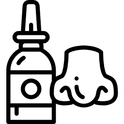

An Introduction to Overdose Prevention and Harm Reduction in New York City
By Nic F. Anderson
A photo of a blue Naloxone kit from New York City.
In 2021, 1,233 people died from fatal drug overdoses. Seventy-eight percent of these deaths were fentanyl-related. The Bronx, Manhattan and Brooklyn were hit the hardest.
“The overdose epidemic is taking one New Yorker from us every four hours,” said Health Commissioner Dr. Ashwin Vasan in a statement.
Harm reduction is a combination of medical methods and strategies that reduce the risk of a fatal drug overdose by putting the person first, meeting them where they’re at, and according to Williams, finding a way to create conditions that make sure people are safe and taken care of.
There are many methods of harm reduction such as needle and syring exchange programs, overdose prevention plans and using Narcan/Naloxone to reverse an overdose.
Opioid versus Opiate? What is fentanyl?
Opiates are derived from poppy sap and fibers and include opium, morphine, codeine and heroin. Opiods are not derived from plant matter but are made synthetically. According to the Oregon Health Department, the list of opioids is long but the "well-known" types include:
Dextromethorphan (available in the U.S. without prescription as, e.g., NyQuil, Robitussin, TheraFlu, Vicks)
Carfentanyl/carfentanil (e.g., Wildnil, for veterinary use)
Opioids are used as pain relievers and produce feelings of happiness and comfort. Side effects include constipation, nausea, drowsiness and respiratory depression. When used as prescribed by a doctor, the risk of overdose is low. Increased risks for an overdose can happen when there is a change in tolerance, mixing drugs, drug quality, previous (non-fatal) overdose and using alone. Even consuming or injecting a “low dose” of fentanyl can cause an overdose as it is 50 to 100 times stronger than morphine and 30 to 50 times stronger than heroin.
“More New Yorkers die of drug overdoses than homicides, suicides, and motor vehicle crashes combined,” according to the city in the preliminary report of fatal drug overdoses in 2021.
According to the Centers for Disease Control (CDC), "Fentanyl is a powerful synthetic opioid that is similar to morphine but is 50 to 100 times more potent.1,2 It is a prescription drug that is also made and used illegally. Like morphine, it is a medicine that is typically used to treat patients with severe pain, especially after surgery.3 It is also sometimes used to treat patients with chronic pain who are physically tolerant to other opioids. Tolerance occurs when you need a higher and/or more frequent amount of a drug to get the desired effects... Rates of overdose deaths involving synthetic opioids other than methadone, which includes fentanyl and fentanyl analogs, increased over 56% from 2019 to 2020. The number of overdose deaths involving synthetic opioids in 2020 was more than 18 times the number in 2013. More than 56,000 people died from overdoses involving synthetic opioids in 2020. The latest provisional drug overdose death counts through June 2021 suggest an acceleration of overdose deaths during the COVID-19 pandemic."
How To Recognize An Overdose
If you believe someone is overdosing....
Stopped or slowed breathing
Unconscious or unresponsive
Blue/gray/white lips or nails – sometimes both.
Snoring or gurgling sounds (when unconscious or unresponsive).
Muscle stiffness or rigidity (sign of fentanyl).
If you believe someone is overdosing, try to wake the person up with your words or a sternum rub. If the person is still unresponsive, use Naloxone or Narcan and then call for an ambulance.

Narcan and Naloxone: An Overview
Naloxone is the generic version of Narcan. It is considered "a safe medication that can save someone’s life by reversing the effects of an opioid overdose," according to New York City" Naloxone/Narcan will only work opioids, such as heroin, prescription painkillers and fentanyl; however, if you use Narcan/Naloxone on someone who ended up not taking opioids, it is still safe.
Many community organizations throughout New York City, along with the city's health department, offer free Narcan/Naloxone trainings.
If Using, Come Up With a Harm Reduction Plan
Take time to sit down and think about the various ways you can reduce the negative side effects of using drugs by coming up with a plan. It's best if this plan is shared with someone you trust.
There are two supervised injection facilities in New York City -- one in East Harlem, the other in the Bronx -- that have drug testing kits on hand and staff members ready to jump into action, should someone accidentally overdose.
Never use alone but if you do, Let someone else know when you're using and plan a time to check in with them.
If you don't have anyone you can tell, for whatever reason, call the “Never Use Alone” hotline at 800-484-3731.
If your tolerance has decreased, such as after going through detox, remember that your body probably cannot handle the same dose that it did before. Go low and slow, there's no rush.
If or when ready, seek out methadone treatment with a medical provider. If this seems daunting, reach out to someone who cares about you to ask for help.
Wait... What Are Overdose Prevention Centers? (OPC)
The two overdose prevention centers in New York City opened Novemeber 2021 and have already averted hundreds of accidental overdoss. New York City is not the first to do this, there are currently more than 100 OPCs throughout the world.
According to New York City,"A Health Department feasibility study* found that opening four OPCs in NYC would
save up to 130 lives and $7 million in direct health care costs per year."
In Nov. 2021, the city opened two supervised injection sites, one in Washington Heights and the other in East Harlem. In addition to this, there are sharps and medical waste drop off locations and drop off-boxes throughout the city.
Needle Exchange Programs in NYC (not an exhaustive list)
Syringe service programs provide people with clean syringes and needles, Narcan/Naloxone, education and more. Using clean needles and syringes every time someone uses decreases the risk of contracting Hepatitus C, HIV and other viruses and infections. These services also provide information on intravenous use, for example, what the different needle sizes mean and what it can or cannot do to your body.
If you use intravenous drugs, it's important to make sure you dispose of your used syringe and needles properly. There are more than 100 sharps container and medical waste drop off sites throughout New York City.
For more information on harm reduction, visit your local community organization, New York City Health Department or a New York City Public Hospital.